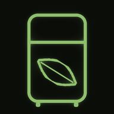

Tieni traccia, riduci gli sprechi
Tocca il pulsante "+" in basso e inizia a elencare cosa hai comprato.
Es. "yogurt 18 marzo per la torta" — senza data: "verdura tra una settimana"
Tocca per iniziare a parlare
I prodotti che scadono prima di questa data vengono separati in home, da consumare con priorità.
Accedi con Google per sincronizzare i tuoi prodotti su tutti i dispositivi.
I tuoi dati sono sincronizzati su tutti i dispositivi.
Condividi un unico inventario con chi vive con te (fino a 5 persone): quello che aggiunge o consuma un membro compare a tutti in tempo reale.
Membri
Caricamento della casa…
Tiene traccia delle scadenze di frigo e dispensa. Aggiungi i prodotti a voce o scrivendoli, e l'app ti avvisa quando stanno per scadere. Nessuna intelligenza artificiale nel riconoscimento: solo regole scritte a mano, per questo c'è sempre un passaggio di controllo prima di salvare.
Tocca il pulsante "+" in basso, poi il microfono, e di' cosa hai comprato, nel formato "prodotto, giorno, mese", con il motivo opzionale dopo "per". Esempio:
"yogurt diciotto marzo per la torta, poi salmone ventuno luglio"
Puoi separare più prodotti dicendo "poi", "e poi", "quindi", "e quindi", "inoltre" o facendo una virgola. Nella stessa schermata trovi anche la scheda "Testo", per scrivere invece di parlare — stesso formato, stessa lista di revisione.
Puoi dettare più prodotti uguali in una volta sola con un numero all'inizio, es. "tre yogurt diciotto marzo": compaiono subito come righe distinte nella lista di revisione, così puoi correggerne una senza toccare le altre (es. se uno dei tre scade in realtà un giorno dopo).
Per prodotti senza una data stampata (es. verdura fresca), invece della data di' una durata approssimativa: "verdura tra una settimana", oppure con giorni/settimane/mesi ed espressioni come "un paio di giorni" (2) o "qualche giorno" (3). Per valori come "una settimana e mezza" l'app arrotonda sempre per eccesso, mai per difetto. Compare comunque con l'anello colorato come gli altri, con un'etichetta "Stima" a ricordarti che è una data approssimativa.
Prima di salvare, controlla sempre la lista riconosciuta: puoi correggere nome, data e motivo di ogni prodotto, oppure toccare di nuovo il microfono (o scrivere ancora) per aggiungerne altri senza perdere quelli già riconosciuti.
In home i prodotti sono ordinati per scadenza. I filtri in alto (Tutti, In scadenza, Scaduti, Storico) mostrano un sottoinsieme della lista, senza cambiarne l'ordine.
Prodotti con lo stesso nome esatto vengono raggruppati in una sola card, con il più vicino a scadere in evidenza e gli altri mostrati come pallini più piccoli accanto. Tocca la card per espanderla e vedere ogni prodotto singolarmente, con tutte le azioni di sempre (dettaglio, "aperto", consuma, elimina).
Il numero al centro dell'anello indica i giorni rimanenti.
Se un prodotto dura meno una volta aperto (es. uno yogurt), apri il suo dettaglio e tocca "Segna come aperto": indichi quanti giorni gli restano da quel momento, e l'anello colorato si aggiorna di conseguenza. La data stampata sulla confezione resta comunque salvata, solo non è più quella mostrata in home.
Per i prodotti senza data stampata dettati con "tra N giorni/settimane/mesi" (vedi sopra), l'app calcola subito una scadenza stimata al posto della data esatta, mostrata con l'etichetta "Stima".
In entrambi i casi trovi nel dettaglio un tasto "+7 giorni", per allungare la scadenza senza ricalcolare a mano. Per i prodotti aperti, vedi anche da quanti giorni sono aperti (riga discreta, solo nel dettaglio, non in home).
Eliminare o segnare come consumato un prodotto non lo cancella per sempre: resta visibile nel filtro "Storico" per 24 ore, con un'etichetta che ne indica lo stato al posto dell'anello. Apri il suo dettaglio e tocca "Ripristina prodotto" per farlo tornare attivo, in caso di errore.
Nel dettaglio di qualsiasi prodotto (anche nello storico) trovi anche "Duplica": crea una copia indipendente con stesso nome, scadenza, data di acquisto, motivo e note, e ti porta subito al dettaglio della copia. Il duplicato nasce sempre attivo e mai "aperto", anche se l'originale lo era.
Nella schermata di aggiunta prodotto (pulsante "+" in basso), scheda "Linea consumo": imposta una data e, in home, i prodotti che scadono prima vengono separati da una riga, per ricordarti di consumarli con priorità (es. prima di partire per un viaggio). Solo visivo, non cambia colori o urgenza. Fuori da una casa condivisa resta solo su questo dispositivo (non si sincronizza con l'account); dentro una casa condivisa è invece la stessa per tutti i membri.
Tocca l'icona account in alto a destra per accedere con Google — è sempre facoltativo, l'app funziona bene anche senza. Da loggato, l'icona mostra la tua foto profilo (o l'iniziale del nome se non disponibile), e i prodotti si sincronizzano automaticamente su tutti i dispositivi collegati allo stesso account.
Se hai già prodotti salvati solo su questo dispositivo, al primo accesso ti viene chiesto cosa farne: caricarli sull'account, lasciarli solo qui, oppure eliminarli definitivamente. Se scegli di lasciarli solo qui, la domanda si ripresenta alla prossima apertura.
Da Account (serve prima accedere con Google) puoi creare una casa condivisa: un unico inventario per chi vive con te, fino a 5 persone. Chi crea la casa ottiene un codice invito di 6 caratteri; gli altri lo inseriscono nel campo "Entra con il codice" nella stessa schermata.
Dentro una casa tutti i membri sono alla pari: chiunque può aggiungere, modificare, consumare o eliminare qualsiasi prodotto, e i cambiamenti compaiono agli altri in tempo reale, senza ricaricare. Accanto al nome della casa un contatore tipo "3/5" mostra quanti posti restano. La lista dei membri è visibile a tutti; non viene tenuto traccia di chi ha aggiunto o consumato cosa.
Chi ha creato la casa può rigenerare il codice in qualsiasi momento: il vecchio codice smette subito di far entrare gente nuova, ma i membri già dentro restano.
La linea di consumo, quando sei in una casa, diventa condivisa: la stessa data vale per tutti i membri.
Puoi abbandonare la casa quando vuoi. Da quel momento il tuo dispositivo tiene una copia dei prodotti così com'erano all'uscita, che rientra tra i tuoi prodotti personali; la casa e gli altri membri non ne risentono. Nessuno può essere espulso da un altro membro (permessi paritari).
Le novità principali che puoi vedere o usare, una voce per versione (per il changelog tecnico completo vedi il README del progetto):
Versione app:
Hai prodotti salvati solo su questo dispositivo. Vuoi caricarli nel tuo account? Si sincronizzeranno su tutti i dispositivi. In ogni caso, restano anche qui.